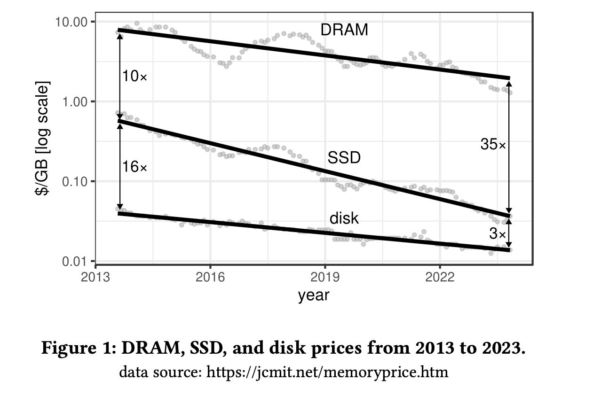
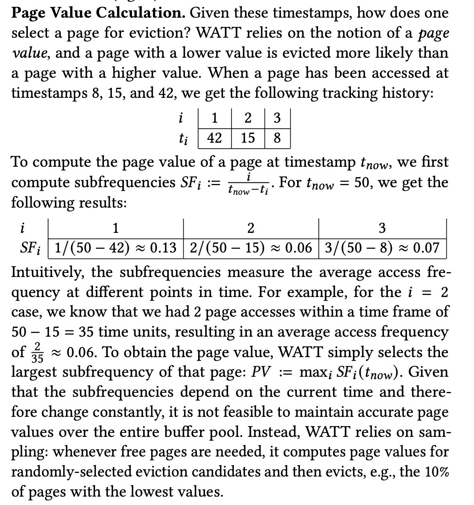
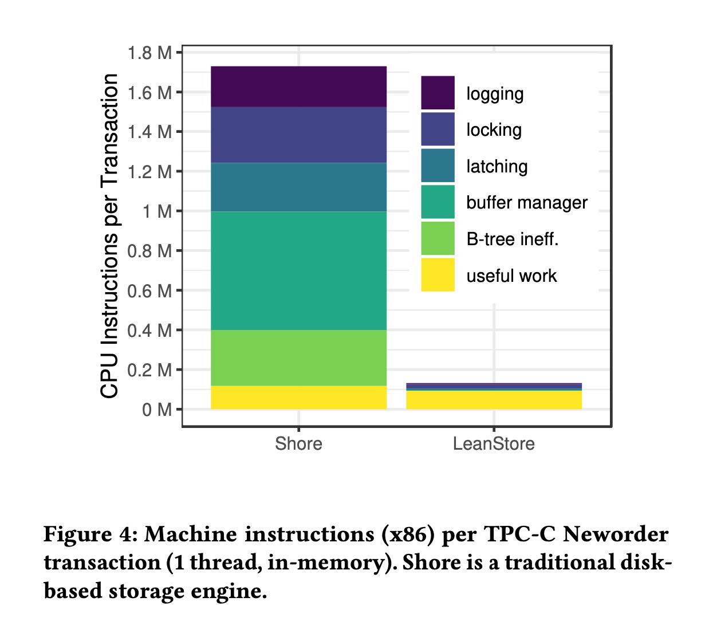

LeanStore A High-Performance Storage Engine for NVMe SSDs
TUM在这个系统上做过许多改进和实验，作者做了个回顾哪些技术是有效的哪些是无效的，并且做了说明和分析。估计在这个系统上获得了许多经验，值得整理一下。
[!NOTE] LeanStore Evolution. Over the course of the project, LeanStore was rewritten from scratch several times. The first prototype was developed by Michael Haubenschild and demonstrated that low- overhead caching is possible [45]. The second version, which is available as open source, was primarily implemented by Adnan Al- homssi and added support for multi-version concurrency control [4]. We are happy that this version is used by other research groups as a prototyping platform for novel ideas [72, 76]. A third implementa- tion is under development and is based on virtual-memory-assisted buffer management [43]. Each implementation benefited from the experience of the previous one, and led to improvements and sim- plifications. While re-writing the system several times may not be the fastest way to a production-grade system, it allows for radical, experience-based simplifications that, in the long run, result in a much simpler design and implementation.
leanstore这个系统是一个针对NVMe SSDs优化的，适合用于OLTP workload的存储引擎，类似rocksdb,wiredtiger提供了必要的存储支持，并不是完整的数据库系统。leanstore采用了一种贴近当前硬件趋势变化的设计方法，比如针对NVMe SSDs设计是因为in-memory系统感觉并不是cost-effective, NVMe SSDs的高IOPS以及低延迟则要求重新设计IO系统和CPU系统，另外就是multi-core使得单机可以有上百核那么cpu scalability也需要被仔细考虑等等。
[!NOTE] LeanStore. The goal of LeanStore [45] is to build a storage engine that rivals the performance of in-memory systems without having to keep all data in main memory. To achieve this requires combining many of the modern in-memory optimizations (e.g., lightweight synchronization, CPU and cache efficiency) with techniques from disk-based systems (e.g., B-trees, paged storage, physiological log- ging, fuzzy checkpoints). The most important technical challenge is managing hardware parallelism at both the CPU and SSD level.
LeanStore is a storage engine optimized for NVMe SSDs and multi-core CPUs. Similar to other storage engines such as RocksDB [18], WiredTiger [55], Shore-MT [31], FASTER [13], and LMDB [65], it provides indexing and transactions, but no support for SQL or high-level query processing capabilities. LeanStore is an embeddable C++ library [2] offering APIs for index access (insert, update, delete, point lookup, range scan) and trans- action management (begin, commit, rollback). Keys and payloads are opaque arrays of bytes, so it is up to the application to interpret the data appropriately [2].
stonebraker鼓励整个DBMS社区设计in-memory database system, 但是DRAM的cost下降速度远比不上SSD. 并且SSD的容量也开始上来了，所以leanstore设计目标就多盘高吞吞吐的SSD 
[!NOTE]
Internally, an SSD consists of many flash chips that can be accessed in parallel, which is why SSD bandwidth has historically been limited by the interface to the host system. The transition from SATA 3 (0.5 GB/s) to the NVMe/PCIe interface changed this by allowing users to exploit the quickly improving interconnect speeds of PCIe 3.0 (4 GB/s), PCIe 4.0 (8 GB/s), and PCIe 5.0 (16 GB/s). Thus, from 2017 to 2023, SSD bandwidth increased by 30 times – while price per byte dropped by one order of magnitude. With support for 10 or more SSDs in a single server, this means that a server with tens of millions of I/O operations per second and an aggregated bandwidth rivaling DRAM is not just possible – but affordable and readily available [24].
Buffer management
我记得Umbra取消了buffer manager转而使用pointer swizzling. 但是作者说其实这个pointer swizzling问题比较大，主要就是需要修改所有的指针持有者。所以leanstore还是转而使用了类似buffer manager的方法，但是并不是在应用层显式做page management. 而是完全交给了操作系统的mmap(汗)，文章叫做Virtual-Memory-Assisted Buffer Management(vma).
[!NOTE] The DBMS Is In Control. Instead, in the vmcache design, the DBMS takes control using three widely-supported OS primitives: • Lazyallocationofvirtualmemory: mmap(NULL, ssdSize, …, MAP_ANONYMOUS …) • Pagemiss: pread(fd, &virtMem[pid], pageSize, pid * pageSize) • Eviction: madvise(&virtMem[pid], pageSize, MADV_DONTNEED)
On startup, vmcache allocates a large amount of anonymous vir- tual memory, with its size corresponding to the total storage size (ssdSize in the code fragment). When a cache miss occurs for a page with the page identifier pid, the I/O system call (pread in the code fragment) uses the corresponding virtual memory ad- dress as the destination for the page. Before the physical memory capacity is exhausted, vmcache explicitly selects pages for evic- tion and then communicates this decision to the operating system (madvise(…,MADV_DONTNEED) in code fragment).
Page replacement
page replacement算法则是设计了叫做page value的东西：在每个page上记录了最近K次的访问时间，然后对每个page估算access frequency选择一个最大的作为page value. page value越大那么说明访问更加频繁。page value不仅仅考虑了访问时间，还考虑了访问类型(write/read，通过加权). 这样可以做到write-awareness, 毕竟write cost比read cost要高。触发时间还是在almost full page的时候，选择接近10%的pages淘汰掉。

IO management
大致意思就是IOPS上来了，那么留给用于处理IO的cpu cycles(15000)就少了，不然瓶颈就容易出现在CPU上。CPU要充分利用多核(100 cores)减少global lock, 自己管理io stack(DPDK), 和kernel做co-design(disable page cache, disable RAID, specialized unikernel), 自己做task management等等。 page size还是选用4KB比较好，另外就是sequential IO和random IO其实没有太大差别了。
[!NOTE] The recent performance explosion of NVMe SSDs has fundamentally changed these assumptions. The performance of modern PCIe 5.0 SSDs is approaching 3 million I/O operations per second (IOPS) for random 4 KB reads. Servers have enough PCIe lanes for ten or more such devices, which means that tens of millions of IOPS have become feasible.
Tight CPU Budget. In the original LeanStore paper, we argued that briefly acquiring a global lock before every I/O operation is not problematic [45]. This may have been the case in 2018. However, the assumption that any CPU work on the I/O path is negligible because I/O is slow anyway, is not true anymore. Consider a server with 100 cores at 3 GHz and 8 SSDs with 2.5 M IOPS each, which is similar to a server in our lab. Assuming very optimistically that all CPU cores of the server can be used and that there is no overhead from synchronization, this implies that for every I/O operation, we have a budget of at most 15,000 CPU cycles. For out-of-memory workloads, every transaction may very well cause a page miss and therefore an I/O operation. For any storage engine that wants to exploit the I/O capabilities, this means that it has a total of 15,000 cycles for the index lookup, concurrency control protocol, task management, page replacement, and for actually performing the I/O itself.
This is challenging because the degree of parallelism that is beneficial for flash is higher than the number of hardware threads, requiring careful orchestration of asynchronous I/O interfaces and user-level tasks [24, 30]. Finally, achieving high I/O rates also requires disabling the OS page cache, the file system, and any software RAID [23, 24]. Even the remaining low-level block device layer of Linux can be a bottleneck, which can be avoided with user-space I/O NVMe stacks such as SPDK [24].
To avoid users having to configure the number of threads, we therefore switched [24] to an approach where we start exactly as many worker threads as there are hardware threads and where each worker thread is responsible for all tasks. We rely on a lightweight context switching mechanism, to switch between tasks at appropriate points, e.g., a page miss. Note that this effectively re-implements many of the I/O and scheduling responsibilities op- erating systems are supposed to handle, but is currently necessary to achieve the performance goals.
Indexing
还是继续使用B-Tree做index. in-memory index虽然性能比B-tree要好，但是小内存非常多不太适合buffer management, 不太适合Out-of-memory workload. 在B-Tree上也可以想办法 a)减少content b)有效地做space management(X-Merge).
Low-Level Data Structure Synchronization
放弃了lock-free数据结构，太复杂并且限制很多。在lock protocol上做优化：Optimistic, Versioned Locks + Optimistic Lock Coupling.
MVCC, Logging & Recovery
因为自己也不太懂所以就草草略过了。MVCC里面主要创新点是如何更高效地做commit, 另外就是如何有地回收节点减少内存压力。而日志恢复部分则是考虑如何将多个logs可以并行地记录并且回放，毕竟磁盘这么多磕着一个WAL文件使用效率上不去。
之前有论文指出过生产中的DBMS大部分CPU inst都被用于dbms management, 只有少部分CPU inst用于useful work. 在LeanStore这么一通优化之后userful多了，而且看上去非常的多。
[!NOTE] Architecture. LeanStore shares many of the architectural features of traditional disk-based systems, such as page-based storage, buffer management, B-tree indexing, physiological redo/undo logging, fuzzy checkpointing, and a concurrency control implementation that supports arbitrarily-large transactions. A decade ago, this func- tionality was thought to come at a high cost in terms of in-memory CPU overhead. For example, Harizopoulos et al.’s [26] careful ex- perimental study shows that in a traditional storage engine such as Shore, the internal overhead for logging, concurrency control, and buffer management dominates the overall CPU time. What LeanStore shows is that these components can be implemented efficiently such that useful work becomes dominant. CPU efficiency and scalability is not just important for in-memory workloads but also in out-of-memory situations [24].
OLTP Trough The Looking Glass Revisited. To compare Hari- zopoulos et al.’s [26] results with LeanStore, we followed the same methodology of removing as many components as possible while running the TPC-C Neworder transaction in-memory using a single thread [1]. Figure 4 shows the x86 instructions counts across these two systems4. We see that in LeanStore, useful work, rather than internal overhead, dominates the overall CPU time. As a result, LeanStore’s in-memory performance is higher by one order of mag- nitude. Also note that LeanStore scales much better across CPU cores [4] and is capable of achieving similar performance in out- of-memory workloads [24]. These performance gains are achieved through careful optimization of all system components for highly parallel hardware and techniques such as optimistic data structure synchronization.
